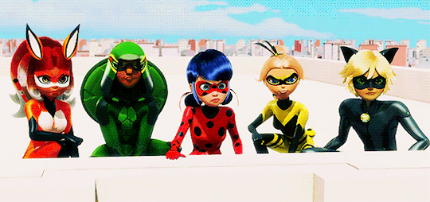
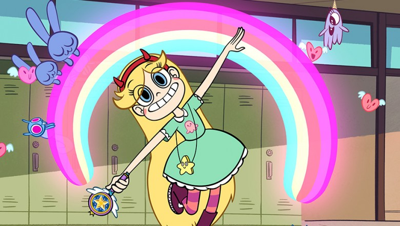
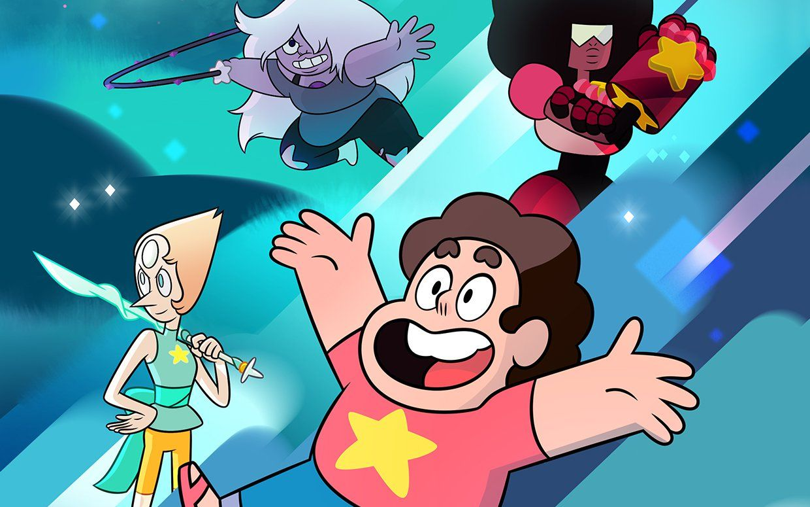

Hi, my name is Alexandra and I am part of Girls Who Code! I am a very curious girl and I am always excited to learn more about everyhing under and above the sun. I moved from Panama (ptss, Central America) to the United States last year. Everything is so different and amazing. I am eager to share my experiences and learn more about this new place.
I love to read manga, and watch anime and children series in my free time. Also, I love math. Just to clarify, I do not mean that I am a pro at math and that I can solve any problem just by looking at it. In fact, I can stay for hours staring at the same problem without having the most little clue of what to do.
To emphasize my love for anime and math, I will include the their own headlines below!
Some of my favorite titles are:
Ahhh, sorry. I tried to make this part nicest, but no time :c
AHHHHHH, I didn't have time for this part :c
Whatever, I love math because there is always a hundreds ways to find a solution. You can even combine totally different and errant techniques to find a solution to a problem. Solving math problems have showed me that if you have a problem in your life, you can indeed stare at it for hours, having absolute no idea what to do, feeling lost and insecure, I remember that just as in math, there are bizillions of different methods to get to your goal.
Another cool thing about math is that with super basic knowledge you can solve very complex problems! I planned to include a problem, but yikes, I did not have enough time.
Miraculous Ladybug
Miraculous: Tales of Ladybug & Cat Noir is a CGI superhero animated series produced by French studios Zagtoon and Method Animation in collaboration with De Agostini Editore in Italy, Toei Animation in Japan, and SAMG Animation in South Korea. The series features two Parisian teenagers, Marinette Dupain-Cheng and Adrien Agreste, who transform into the superheroes Ladybug and Cat Noir, respectively, to protect the city from supervillains. They also have a crush on both their heroic and civilian forms.
Star Vs. The Forces Of Evil
The series follows the adventures of Star Butterfly, the young turbulent heir to the royal throne in the dimension of Mewni, who is sent to Earth to mellow her reckless behavior. There she befriends and becomes roommates with human Marco Diaz and begins a semi-normal life in Echo Creek, attending school and meeting new friends. Throughout the first season, the two travel to exotic dimensions using dimensional scissors while preventing the Mewman monster Ludo from stealing Star's magic wand. As the series progresses, Star and Marco meet new friends, take on new enemies, and travel to even more weird and wild dimensions.
Steven Universe
Steven Universe is an American animated television series created by Rebecca Sugar for Cartoon Network. It is Cartoon Network's first animated show created solely by a woman. It is the coming-of-age story of a young boy, Steven Universe, who lives with the Crystal Gems—magical, humanoid aliens named Garnet, Amethyst, and Pearl—in the fictional town of Beach City. Steven, who is half-Gem, has adventures with his friends and helps the Gems protect the world from their own kind. The themes of the series include love, family, and the importance of healthy interpersonal relationships.